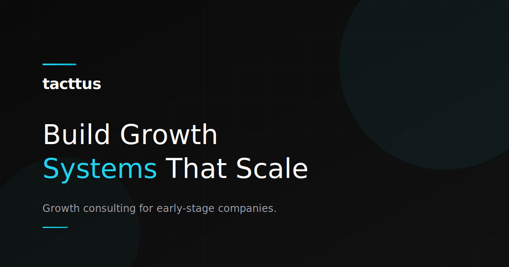

Export OG Image to PNG
Right-click on the image below
Select
"Save Image As..."
Save it as
og-image.png
in your tacttus-landing folder
Deploy to Vercel
Use LinkedIn Post Inspector to refresh the cache
Or use
CloudConvert
to convert the SVG file.
